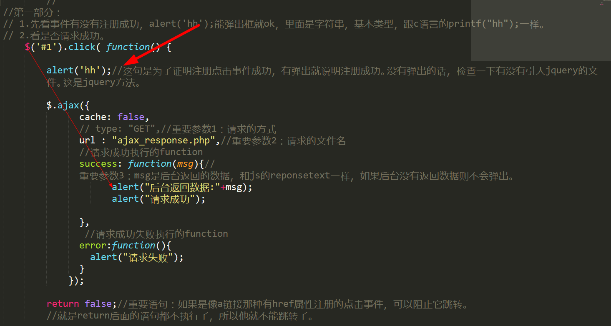
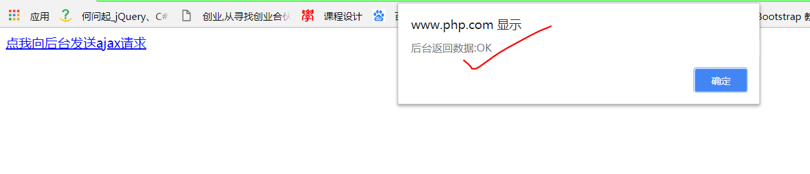
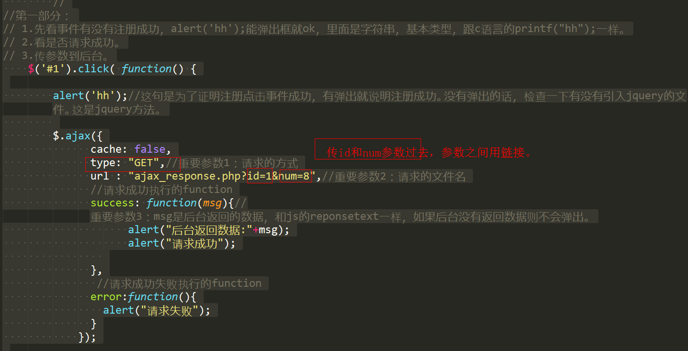
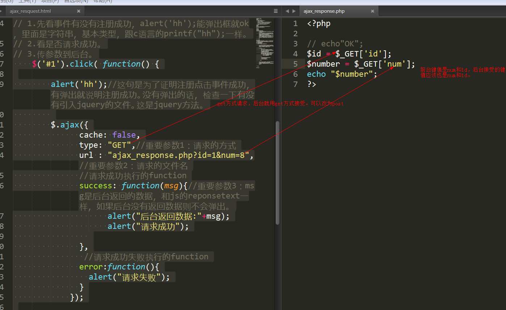
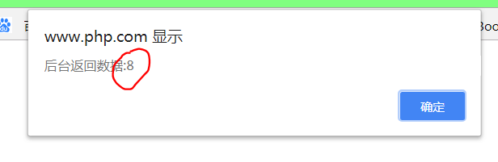

<!DOCTYPE html> <html> <head lang="en"> <meta charset="UTF-8"> <title></title> <script src="https://cdn.staticfile.org/jquery/2.1.1/jquery.min.js"></script> <!-- <script src="./Public/Home/js/jquery.min.js"></script> --> </head> <body> <a id ="1" href="javascript:;">点我向后台发送ajax请求</a> </body> </html> <script> //jquery注册点击事件， //注意不要使用原生js的$("#1").on('click',function(){}); //使用jquery的$('#1').click(function(){}); //第一，js和jquery的方法不能呢混合使用。避免有些函数不通用。比如在这里用js的on()方式的话，return false是不起作用的，这个是阻止a链接跳转的。网上搜"return false"便知。 //第二，尽量使用jquery的方法。jquery的方法是封装js语句的，使用起来比较简单，就比如这个ajax。 $('#1').click( function() { alert('hh');//这句是为了证明注册点击事件成功，有弹出就说明注册成功。没有弹出的话，检查一下有没有引入jquery的文件。这是jquery方法。 $.ajax({ //cache: false, //type: "GET",//重要参数1：请求的方式 url : "ajax_response.php",//重要参数2：请求的文件名 //请求成功执行的function success: function(msg){//重要参数3：msg是后台返回的数据，和js的reponsetext一样，如果后台没有返回数据则不会弹出。 alert("后台返回数据:"+msg); alert("请求成功"); }, //请求成功失败执行的function error:function(){ alert("请求失败"); } }); }); </script>

<!--ajax_request.html-->
<!DOCTYPE html> <html> <head lang="en"> <meta charset="UTF-8"> <title></title> <script src="https://cdn.staticfile.org/jquery/2.1.1/jquery.min.js"></script> <!-- <script src="./Public/Home/js/jquery.min.js"></script> --> </head> <body> <a id ="1" href="https://www.baidu.com/">点我向后台发送ajax请求</a> </body> </html> <script> //jquery注册点击事件， //注意不要使用原生js的$("#1").on('click',function(){}); //使用jquery的$('#1').click(function(){}); //第一，js和jquery的方法不能呢混合使用。避免有些函数不通用。比如在这里用js的on()方式的话，return false是不起作用的，这个是阻止a链接跳转的。网上搜"return false"便知。 //第二，尽量使用jquery的方法。jquery的方法是封装js语句的，使用起来比较简单，就比如这个ajax。 // // // //第一部分： // 1.先看事件有没有注册成功，alert('hh');能弹出框就ok，里面是字符串，基本类型，跟c语言的printf("hh");一样。 // 2.看是否请求成功。 // 3.传参数到后台。 $('#1').click( function() { alert('hh');//这句是为了证明注册点击事件成功，有弹出就说明注册成功。没有弹出的话，检查一下有没有引入jquery的文件。这是jquery方法。 $.ajax({ cache: false, type: "GET",//重要参数1：请求的方式 url : "ajax_response.php?id=1&num=8",//重要参数2：请求的文件名 //请求成功执行的function success: function(msg){//重要参数3：msg是后台返回的数据，和js的reponsetext一样，如果后台没有返回数据则不会弹出。 alert("后台返回数据:"+msg); alert("请求成功"); }, //请求成功失败执行的function error:function(){ alert("请求失败"); } }); return false;//重要语句：如果是像a链接那种有href属性注册的点击事件，可以阻止它跳转。 //就是return后面的语句都不执行了，所以他就不能跳转了。 }); </script>
//ajax_response.php
<?php
// echo"OK";
$id = $_GET['id'];
$number = $_GET['num'];
echo "$number";
?>



其他举例。
第一种：只是想请求后台，不用传参数过去。案例举例：购物车页面中的商品数量修改
$reduce.click(function () {
var $inputVal = $(this).next('input'),
$count = parseInt($inputVal.val())-1,
$priceTotalObj = $(this).parents('.order_lists').find('.sum_price'),
$price = $(this).parents('.order_lists').find('.price').html(), //单价
$priceTotal = $count*parseInt($price.substring(1));
if($inputVal.val()>1){
$inputVal.val($count);
$priceTotalObj.html('￥'+$priceTotal);
//这里添加ajax到后台的代码
var href = $(this).attr('href');
$.ajax({
cache: false,
type: "GET",
url : href,
// traditional:true,
// data: {order : serializeStr}, //注意这里的写法
success: function(msg){
if(msg=="OK"){
// Alert(50,"删除成功");
// location.reload();
}else{
alert(msg);
alert("删除失败");
}
}
});
}
if($inputVal.val()==1 && !$(this).hasClass('reSty')){
$(this).addClass('reSty');
}
totalMoney();
return false;
});
第二种，需要传参数过去，比如id。案例：购物车页面的移除商品。此例又特殊一点，点击a链接不是立即跳转到它的href值的url，而是先弹出一个提示框，确定后才开始请求后台。
//确定按钮，移除商品
$('.dialog-sure').click(function () {
$order_lists.remove();
if($order_content.html().trim() == null || $order_content.html().trim().length == 0){
$order_content.parents('.cartBox').remove();
}
closeM();
$sonCheckBox = $('.son_check');
totalMoney();
//添加到后台删除的ajax,地址为#fuzhu的值
var href = $('#fuzhu').val();
$.ajax({
cache: false,
type: "GET",
url : href,
// traditional:true,
// data: {order : serializeStr}, //注意这里的写法
success: function(msg){
if(msg=="OK"){
Alert(50,"删除成功");
location.reload();
}else{
alert(msg);
alert("删除失败");
}
}
});
})